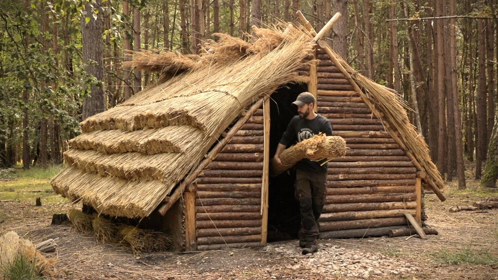
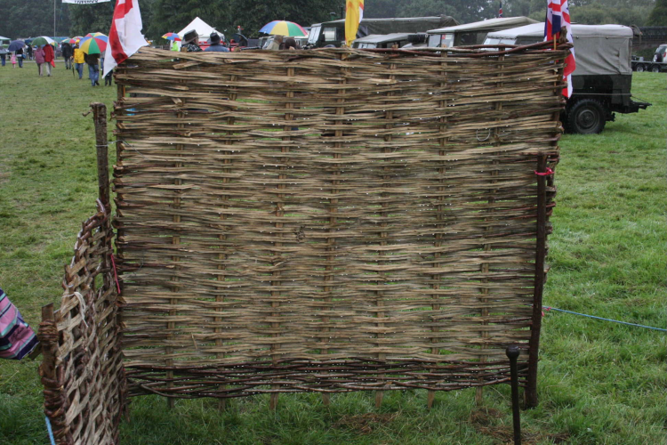
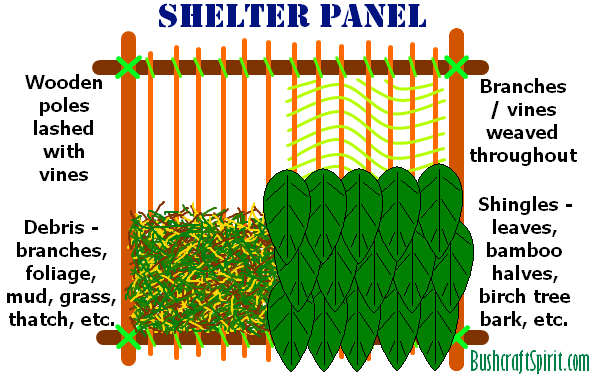
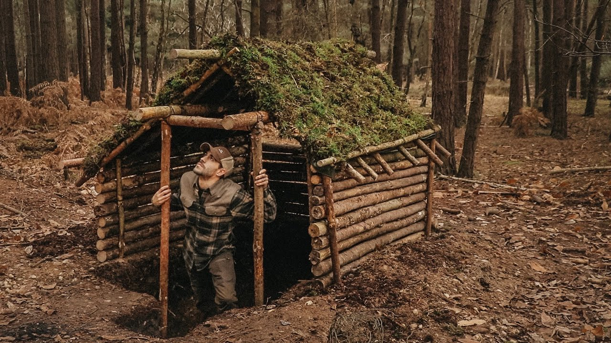

There are several ways to build walls and roofing for a shelter in the woods.

To make wall panels you can make them the same way you would make a wattle fence (you can even use less structural materials such as grasses or small vines). During the winter this type of wall is best covered with mud or mud and grass mixture to keep drafts out. Otherwise just leave the branches uncovered to let air flow.

You can also make a wall panel as described in the following picture.

Another way to make walls is to stack small logs between posts driven into the ground (as shown in various pictures in this section).
There are a number of ways to make a roof, but I would stick to making panels like the walls. Mud with leaves or bark embedded would be good for a roof. We unfortunately do not have moss like you see in the following picture.
It isn't a bad idea to dig out underneath the shelter to give yourself some more vertical room.
